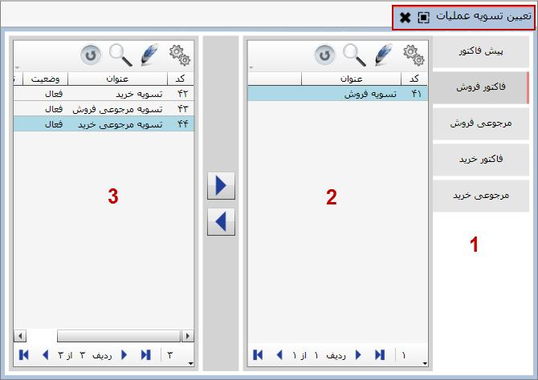

در سیستم خزانه توضیح دادیم که تعدادی عملیات تسویه خرید و فروش قابل صدور از سیستم خرید و فروش تعریف شده است. زمانی که در فاکتور فروش یا خرید و ... نحوه تسویه را سایر تسویه قرار دهید، در آن صورت پس از ثبت فاکتور، سند خزانه مربوط به تسویه فاکتور باز می شود که می توانید سند تسویه فروش یا خرید را از سیستم خرید و فروش ثبت کنید. حال در این قسمت می خواهیم عملیات تسویه مربوط به هر یک از عملیات خرید و فروش را به آن ها اختصاص دهیم. به شکل زیر توجه کنید:
در شکل فوق در قسمت 1 لیست عملیات خرید و فروش قرار دارد، در قسمت شماره 2 عملیات تسویه تخصیص داده شده به عملیات خرید و فروش و در قسمت 3 لیست کلیه عملیات تسویه خرید و فروش به جز موارد تخصیص داده شده به عملیات خرید و فروش مورد نظر واقع شده است. در واقع برای تعیین عملیات تسویه باید عملیات خرید و فروش مورد نظر را انتخاب کرده و عملیات تسویه مربوط به آن را از قسمت 3 به قسمت 2 انتقال دهید.